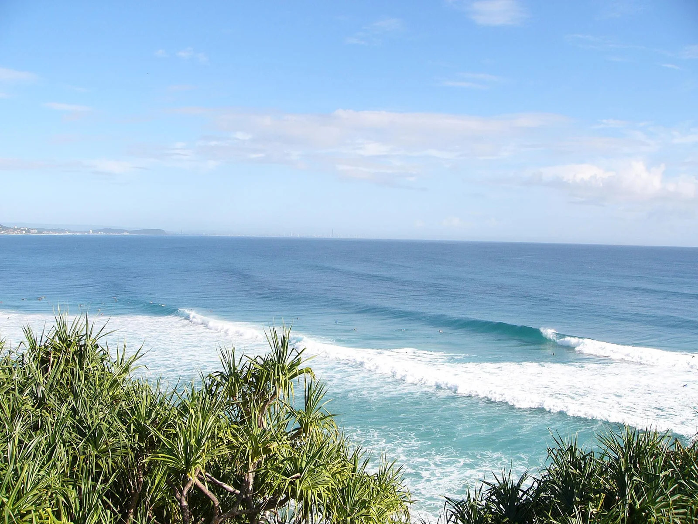

Snapper Rocks — Superbank
Australie · surf

La « Superbank » de la Gold Coast : une droite de sable interminable qui peut relier plusieurs spots d'un seul ride.
- Lieu
- Australie
- Niveau
- Intermédiaire
- Activités
- surf
- Type d'eau
- Mer / océan
- Coordonnées
- -28.16, 153.55 (position approximative du secteur)
Dangers à connaître
- Foule record.
- Courant fort au take-off.
Le conseil d'Ocean Buddy
Affluence énorme mais vague magique ; place-toi bien et sois patient.
Ouvrir dans Ocean Buddy Télécharger sur l'App Store
Source : Description historique Ocean Buddy · vérification externe en attente.